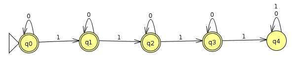
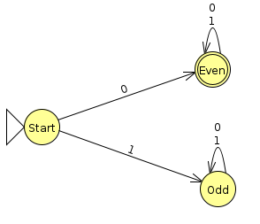

Week 1 Friday Class: Binary And JFLAP
Chris Tralie
Binary Review
We first discussed binary representations today. Binary is great for this class because it will give us a lot of interesting CS relevant examples to play with, so it is worth learning well.
As you recall, instead of 10 digits in each place and powers of 10 in each place, binary numbers have only 0s and 1s as digits and powers of 2. In particular, we have the 1s place, the 2s place, the 4s place, the 8s place, the 16s place, etc.
I've coded up a few applets below so you can practice representing binary numbers. The first two are drills on converting back and forth between binary and base 10, and the last one shows binary addition step by step. Do these until you feel comfortable. If you are totally new to binary, you should have a look at Wiki How's articles on reading binary and adding binary (sections 1 and 2) before you do the drills.
Binary To Base 10 Drills
Binary |
|
Base 10 |
|
Answer |
Base 10 To Binary Drills
Base 10 |
|
Binary |
|
Answer |
Binary Addition Animation
Binary Clock
Below is an example of a binary clock, which I have in my office. Top row is hours in military time (24 hour scale), middle row is minutes, bottom row is seconds
JFLAP Exercises
Next, we got JFLAP installed and we practiced designing and testing DFAs in JFLAP. Click here to review detailed instructions on how to create and test DFAs in JFLAP.
Example 1
As a first example, we created a DFA to accept binary strings with at most three 1s. Below is a solution (Click here to download the JFLAP file)
Example 2
We also designed a DFA that accepts binary strings corresponding to even numbers. We saw that reading in the binary strings from left to right was tricky because we never knew quite where we would end (we'll address this later with something called an NFA), so we decided to read the binary strings from right to left to make it easier; that is, we'll start at the 1s place, then go to the 2s place, then go to the 4s place, etc.
Binary representations are very convenient for spotting even numbers, as the only rule is the 1s place has to have a zero. This is because all other places are even numbers, so we can only make an odd number 2k + 1 by having a one in the 1s place. The machine below implements a right to left even binary detector (Click here to download the JFLAP file)
Example 3
As a challenge, we wanted to see how to design a DFA that would accept binary numbers that, when read from left to right, were evenly divisible by 3 (note that this includes 0), and which would reject all others. We didn't have much time to tackle this in class, but as participation credit for the week, students should submit a JFLAP file on Canvas with an attempt to this problem before class on Monday. It doesn't matter if it's correct, but do spend somewhere between 10 and 20 minutes thinking about it. We'll discuss a solution on Monday, which will help prepare you for problems 1.3 and 2.3 on homework 2.
Here are two hints
- A number which is divisible by 3 has a remainder of 0 when dividing by 3. A number which is not divisible by 3 has a remainder of either 1 or 2.
- When the digits of a binary number are shifted to the left, this multiplies the number by 2. For example, the number 111 is 7, the number 1110 is 14, and the number 11100 is 28.
Below are some tests you can use to test this, along with the result that they should give. Click here to download these tests as a file which you can load into the multiple run tester in JFLAP.
| Decimal Number | Input | Result |
| 72 | 1001000 | Accept |
| 12 | 1100 | Accept |
| 5 | 101 | Reject |
| 0 | 0 | Accept |
| 28 | 11100 | Reject |
| 27 | 11011 | Accept |
| 71 | 1000111 | Reject |
| 75 | 1001011 | Accept |
| 85 | 1010101 | Reject |
| 47 | 101111 | Reject |